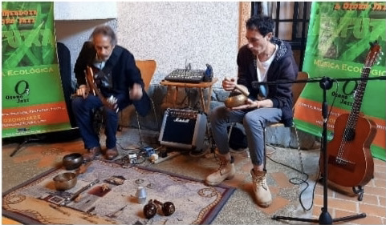

INFO: FUNCIÓN | INTEGRANTES | TARIFAS | DISTRIBUCIÓN
| RIDER |
I N I C I O
AÑOS:
2005 - 09 | 2010 | 2011 | 2012 | 2013 | 2014 | 2015 |
2016 | 2017 | 2018 | 2019 | 2020 | 2021 | 2023 |
 C O N C I E
R T O S & A C T I V I D
A D E S
C O N C I E
R T O S & A C T I V I D
A D E S
2 0 2 2 (x)
I N I C I O
AÑOS:
2005 - 09 | 2010 | 2011 | 2012 | 2013 | 2014 | 2015 |
2016 | 2017 | 2018 | 2019 | 2020 | 2021 | 2023 |
2 0 2 2 (x)
Febrero
Abril
Mayo
Junio
Agosto
Septiembre
Octubre
Noviembre
Diciembre
Sábado, 19-02-2022, 3:00 pm (Emilio & Pedro)
Concierto en la Expo colectiva VENEZUELA NFT El Muro 20x20, Aldea Café, C. C. La Colina, San Antonio de los Altos.
Abril
Sábado, 02-04-2022, 2:00 pm (Emilio & Pedro)
Concierto en el Centro Cultural y Deportivo Los Salias, San Antonio de los Altos
Viernes, 08-04-2022, 7:00 pm (Emilio & Pedro)
Concierto-Peña en el vernisage de la Exposición de Andrés Amarillo Piña, Sala de Exposiciones, Centro Cultural y Deportivo Los Salias, San Antonio de los Altos.

Sábado, 30-04-2022, 3:00 pm (Emilio & Pedro)
Concierto, Centro de Astrología, Kabbalah y Mandalas, San Antonio de los Altos.
Mayo
Sábado, 07-05-2022, 7:00 pm (Emilio)
Concierto, Peña Musical, Casa de Raúl Peña, San Antonio de los Altos.
Sábado, 14-05-2022, 11:00 am (Emilio)
Concierto, Muestra de Criptoarte, Museo Alejandro Otero, La Rinconada, Caracas.

{kind=link}
Junio
Jueves, 23-06-2022, 4:00 pm (Emilio & Pedro)
Taller de Conciencia en torno al Silencio, Centro de Astrología, Kabbalah y Mandalas, San Antonio de los Altos.
Agosto
Sábado, 22-08-2022, 2:00 pm xxxrxdxdxdxdx
Septiembre
Sábado, 04-09-2022, 3:00 pm (Emilio y Pedro)
Octubre
Sábado, 02-10-2022, 11:00 am (Emilio)
Noviembre
Juevesxx, xx-xx-2022, 11:00 am (Emilio)
Diciembre
xxxx, 04-12-2022, 11:00 am (Emilio y )